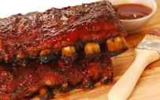

Ribs

These are Smoked BBQ Ribs that I cook on a Green Mountain Grill Smoker
Ingredients
- 1 Rack of Ribs
- Favorite BBQ Rub(can make your own)
- Garlic Powder
- Onion Powder
- Favorite BBQ Sauce
- Brown Sugar
- Apple Juice(used to spray on the ribs every half hour)
Steps
- mix the ingredients together for the rub
- Peel the skin off the ribs
- Rub the rub on the ribs
- Turn Smoker on and set temp to 250 Degree Fareneheit
- Once smoker is ready put ribs directly on rack
- Let ribs smoke for 2 hours, spraying them with apple juice every 30-45 minutes
- after 2 hours pull ribs off and set them in foil, pour BBQ sauce on the ribs
and wrap them in the foil, and put back on smoker for 1 hour
- pull off smoker, let cool and serve